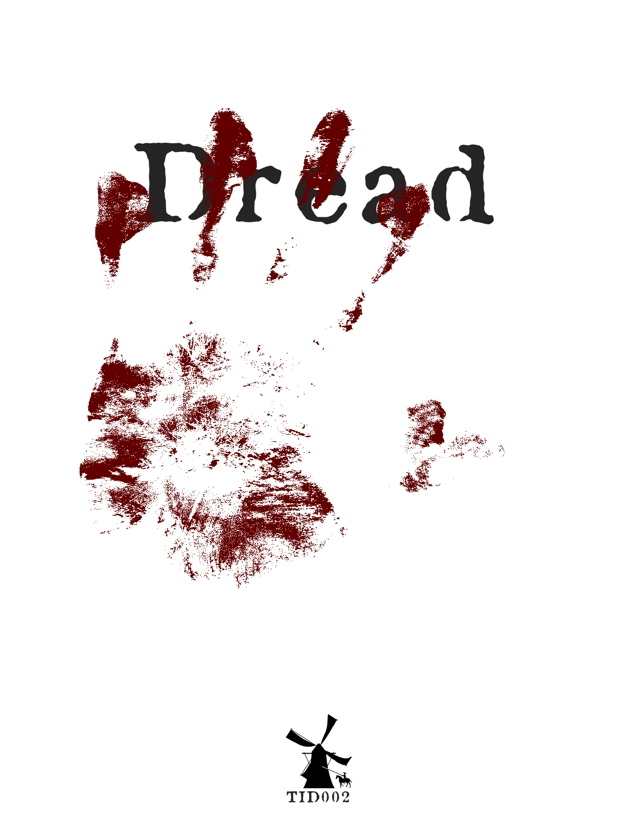

TRPG Review

Dread
Dread is a tabletop role-playing game (RPG) that was first published in 2006 by The Impossible Dream. It is
a horror-themed game that uses a unique mechanic of Jenga blocks to create tension and suspense in the game.
At its core, Dread is a game about survival and horror. Players take on the roles of characters in a horror
story, each with their own unique backgrounds and abilities. The game is focused on exploration,
investigation, and survival, and players must work together to unravel the mystery and overcome the terror
that threatens them.
The game uses a mechanic of Jenga blocks to represent the characters' actions and decisions. When a
character attempts an action or makes a decision that has a significant risk, they must pull a block from
the tower. If the tower falls, their character dies, and the game continues without them. This creates a
sense of tension and danger that makes the game incredibly immersive and engaging.
Dread also features a unique character creation system that allows players to create characters with deep
backgrounds and motivations. This adds an extra layer of roleplaying and immersion to the game, and allows
players to fully inhabit their characters and the horror story that is unfolding around them.
Overall, Dread is a fantastic game for anyone who enjoys horror stories and immersive gameplay. It offers a
unique mechanic that creates tension and suspense in a way that is unmatched by other RPGs, and its focus on
character backgrounds and motivations adds an extra layer of depth to the game. If you're interested in
getting started with Dread, there are many resources available online, including the official Dread website
and various fan-made guides and communities.
Did you enjoy my review of this TRPG? Check out one of my favorite TRPG reviews below or see a
list of TRPG reviews!
More importantly, I'm always looking for new games to enjoy. Let
me know what you're currently playing!
Other TRPGs
Check out another TRPG review!